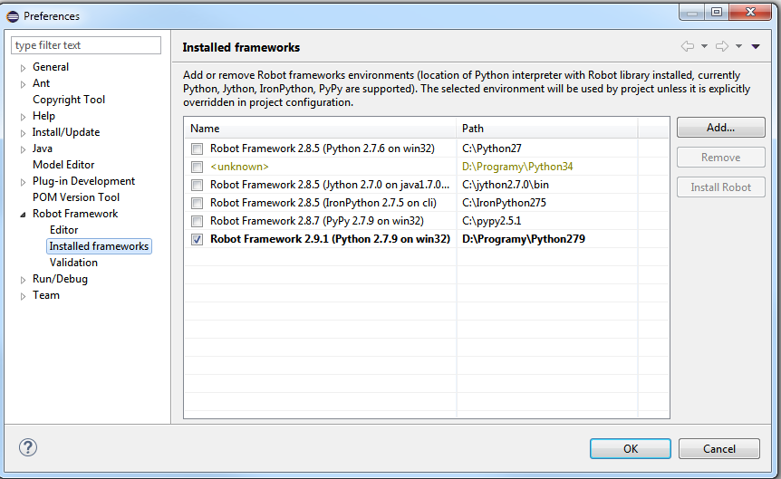

RED Preferences & red.xml and other
This page is intended to help users in following cases:
- set custom Python & Robot instance in multiple Python environment for workspace or project wide usage;
- include external resource files to be seen in content assistance and validation.
Preferences
Editor preferences are stored together with other Eclipse settings, all of them are shared across active workspace.
Preferences can be found in toolbar menu Window -> Preferences -> Robot Framework.
One of the most important item in multiple python environment is setting active Python and RobotFramework instances to be used for running and debugging.
If you need to use different Pythons & Robots in various projects, this can be done editing red.xml in respective project

Preferences in red.xml
Red.xml file is place with Project respective preferences, it is not shared with other projects. It is always created during project creation process in RED.
It provides information about external libraries and variables used in Project so RED can generate libraries documentation used in content assistance and validation.
If RED Robot Editor does not provide you content help or validation suggests that library is not visible, it is good to have a look into red.xml
When library is included in red.xml, documentation is automatic generated by RED

In current releases there is no transparent and discovery mechanism of including variables and libraries files automaticly to red.xml file.
For now user action is required any time when new external library and variable file is included in settings of testcase file.
Red.xml file opened with RED Project Editor should look like follows: